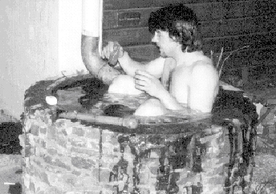

Neben den vielen Pfadiaktivitäten lassen wir Leiter, Raider und Rover es uns nicht nehmen, auch nach den eigentlichen

Übungen noch so einiges zusammen zu unternehmen. So beispielsweise kam vor Jahrendie Idee vom gemeinsamen Zusammenleben auf. Wir entschlossen uns, dies innerhalb einer Woche zu verwirklichen und übernachteten im Schneggenbödeli. Da nur freudige Gesichter diese Woche verliessen, wiederholten wir die sogenannte Heimwoche bisher alle Jahre wieder. So auch dieses Jahr...Wir konnten es kaum erwarten, und setzten die Heimwoche recht früh an. Kaum eingenistet ging es an die alltäglichen Arbeiten, wie Kochen, Abwaschen, Aufräumen, etc. Aber auch die angenehmeren Tätigkeiten, wie das gemütliche Beisammensein, angeregte Diskussionen und unterhaltsame Spiele kamen nicht zu kurz. Wie man es in einer Wohngemeinschaft so hat, half man sich gegenseitig wo man nur konnte. So beispielsweise bei den Hausaufgaben und bei den Vorbereitungen auf eine Prüfung. Auch die Hygiene wurde bei uns nicht nur orthographisch gross geschrieben. Auf Grund der fehlenden Duschen, verhalf man sich mit herkömmlichen Waschlappen oder mit einem angenehmen Bad im Freien zu einem sauberen Dasein. Bleibt sauber und freut Euch auf nächstes Jahr. KALEKS